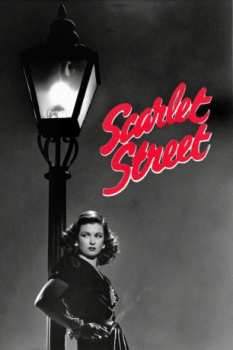
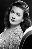
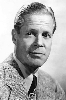
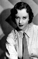

Country:United States, 103 minutes
Spoken languages:
Genres:Drama, Thriller, Crime
Director(s):Fritz Lang
Writer(s):Dudley Nichols, Georges de La Fouchardière, André Mouézy-Éon
Video Codec:Unknown
Number: 1763


Certification:NR
Storyline:
Cashier and part-time starving artist Christopher Cross is absolutely smitten with the beautiful Kitty March. Kitty plays along, but she's really only interested in Johnny, a two-bit crook. When Kitty and Johnny find out that art dealers are interested in Chris's work, they con him into letting Kitty take credit for the paintings. Cross allows it because he is in love with Kitty, but his love will only let her get away with so much.
Cast:   
Medium: Original DVD,
Comments: Part of: Mystery Classics - 50 Movie Pack
Loaned: No
Aspect ratio: Unknown